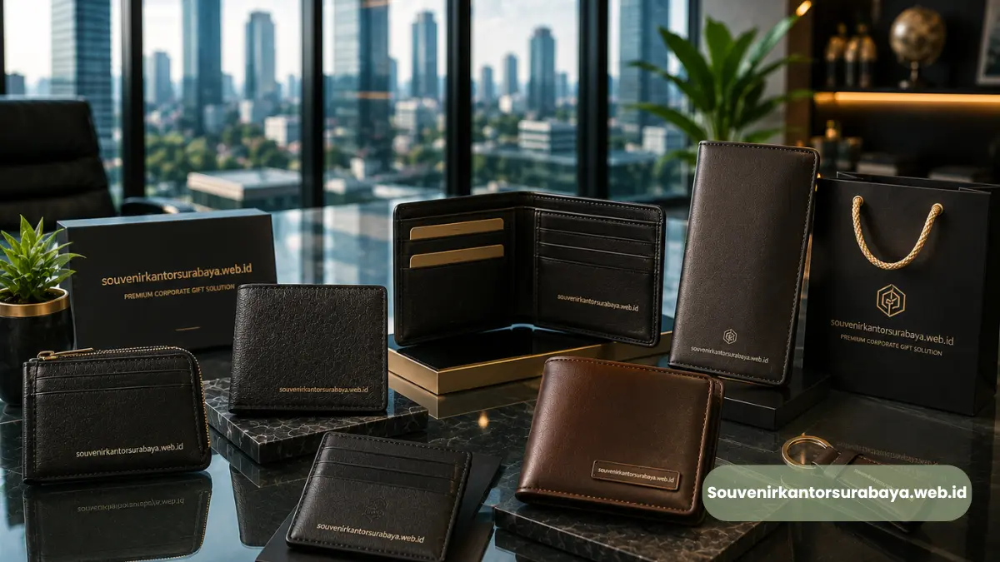

- Apa Manfaat Utama Dompet Kartu Nama Kulit untuk Perusahaan?
- Bagaimana Dompet Kartu Nama Kulit Memperkuat Citra Profesional Perusahaan?
- Mengapa Souvenir Fungsional Lebih Berkesan Dibanding Souvenir Dekoratif?
- Kapan Waktu Terbaik Memberikan Souvenir Dompet Kartu Nama kepada Klien?
- Bagaimana Souvenir Kulit Membantu Membangun Hubungan Bisnis Jangka Panjang?
- Mengapa Souvenir Kulit Custom Lebih Relevan Dibanding Merchandise Generik?
Manfaat utama dompet kartu nama kulit sebagai souvenir korporat adalah memperkuat citra profesional perusahaan sekaligus memberikan barang yang benar-benar terpakai oleh klien dalam aktivitas bisnis sehari-hari.
Produk ini menonjol karena memadukan nilai fungsional dan nilai estetika dalam satu benda kecil yang mudah dibawa ke berbagai pertemuan.
- Memperkuat citra profesional perusahaan di mata klien
- Meningkatkan durasi eksposur logo karena sering dipakai ulang
- Cocok untuk berbagai jenis relasi bisnis, dari klien baru hingga mitra lama
- Lebih personal dibanding souvenir massal berbahan plastik
- Bisa dipesan custom melalui souvenir kantor surabaya untuk kebutuhan korporat Anda
Apa Manfaat Utama Dompet Kartu Nama Kulit untuk Perusahaan?
Manfaat utama dompet kartu nama kulit terletak pada kombinasi fungsi praktis dan kesan eksklusif yang jarang ditemukan pada souvenir korporat lain di kisaran anggaran yang sama.
Sebagai barang yang dipakai berulang, dompet kartu nama kulit memberi peluang lebih besar bagi logo perusahaan untuk terus terlihat setiap kali klien menggunakannya dalam pertemuan bisnis.
Berbeda dengan souvenir sekali pakai atau barang dekoratif yang cenderung disimpan tanpa digunakan, produk fungsional seperti ini cenderung tetap berada di tas kerja atau meja klien dalam jangka waktu lebih lama.
Selain itu, tekstur dan tampilan kulit secara alami memberi kesan berkualitas tanpa perlu desain yang rumit.
Hal ini membuat perusahaan tidak perlu mengeluarkan biaya besar untuk menciptakan kesan premium, karena bahan itu sendiri sudah membawa nilai tersebut.

Bagaimana Dompet Kartu Nama Kulit Memperkuat Citra Profesional Perusahaan?
Dompet kartu nama kulit memperkuat citra profesional dengan cara menghadirkan kesan detail dan perhatian perusahaan terhadap kualitas, bukan hanya kuantitas, saat memilih souvenir untuk klien.
Ketika perusahaan memberikan souvenir yang terlihat asal-asalan, kesan yang tertinggal di benak klien pun cenderung biasa saja.
Sebaliknya, souvenir dengan material solid seperti kulit menunjukkan bahwa perusahaan memperhatikan detail kecil, sebuah sinyal yang sering diasosiasikan dengan profesionalisme dalam menjalankan bisnis secara umum.
Logo yang diemboss rapi pada permukaan kulit juga menghadirkan kesan "quiet luxury", di mana branding terasa halus dan tidak berlebihan, namun tetap mudah dikenali.
Pendekatan ini umumnya lebih disukai oleh klien di level manajerial ke atas dibanding branding yang terlalu mencolok.
Baca Juga
Mengapa Souvenir Fungsional Lebih Berkesan Dibanding Souvenir Dekoratif?
Souvenir fungsional cenderung lebih berkesan karena terus digunakan dalam aktivitas nyata, sehingga interaksi klien dengan brand perusahaan terjadi berulang kali, bukan hanya sekali saat souvenir diterima.
Souvenir dekoratif seperti pajangan meja memang terlihat menarik pada awalnya, namun sering kali hanya dilihat sesekali atau bahkan disimpan tanpa digunakan aktif.
Sebaliknya, dompet kartu nama yang dipakai setiap kali klien bertukar kartu nama dengan relasi bisnis baru menciptakan titik kontak berulang antara klien dan identitas perusahaan pemberi.
Nilai tambah lain dari souvenir fungsional adalah persepsi kepraktisan. Klien cenderung menghargai barang yang benar-benar membantu aktivitas kerja mereka, dibanding barang yang hanya bernilai estetika tanpa kegunaan jelas.
Kapan Waktu Terbaik Memberikan Souvenir Dompet Kartu Nama kepada Klien?
Waktu terbaik memberikan souvenir dompet kartu nama kulit adalah pada momen yang memiliki makna relasi bisnis, seperti penandatanganan kerja sama, kunjungan klien penting, atau perayaan akhir tahun perusahaan.
Pada momen penandatanganan kontrak atau kerja sama baru, souvenir ini dapat menjadi simbol awal hubungan bisnis yang formal namun tetap hangat.
Pemberian pada saat kunjungan klien ke kantor juga memberi kesan bahwa perusahaan telah mempersiapkan sambutan secara khusus.
Selain momen tersebut, souvenir dompet kartu nama kulit juga relevan diberikan pada acara gathering tahunan atau apresiasi mitra bisnis, sebagai bentuk penghargaan atas kerja sama yang telah terjalin sepanjang tahun.
Bagaimana Souvenir Kulit Membantu Membangun Hubungan Bisnis Jangka Panjang?
Souvenir kulit membantu membangun hubungan bisnis jangka panjang karena kesan pertama yang berkualitas cenderung menciptakan asosiasi positif terhadap perusahaan pemberi, yang kemudian terbawa dalam interaksi bisnis selanjutnya.
Dalam relasi bisnis, kepercayaan sering dibangun dari hal-hal kecil yang konsisten, termasuk cara perusahaan memperlakukan klien di luar transaksi utama.
Pemberian souvenir yang dipilih dengan cermat, bukan sekadar formalitas, menunjukkan bahwa perusahaan menghargai hubungan tersebut secara personal, bukan hanya sebatas kepentingan bisnis semata.
Selain itu, karena dompet kartu nama kulit terus digunakan dalam jangka panjang, klien akan berulang kali teringat pada perusahaan pemberi setiap kali menggunakannya untuk bertukar kartu nama dengan relasi lain.
Pengulangan ini secara tidak langsung memperkuat posisi perusahaan dalam ingatan klien dibanding kompetitor yang mungkin hanya memberikan souvenir generik tanpa nilai tambah serupa.
Bagi perusahaan yang berorientasi pada hubungan bisnis jangka panjang, investasi pada souvenir berkualitas seperti ini sering kali sepadan dengan potensi keberlanjutan kerja sama yang terbangun darinya.
Mengapa Souvenir Kulit Custom Lebih Relevan Dibanding Merchandise Generik?
Souvenir kulit custom lebih relevan dibanding merchandise generik karena tingkat personalisasinya menunjukkan usaha ekstra perusahaan dalam mempersiapkan hadiah, bukan sekadar mengambil barang massal dari stok promosi.
Merchandise generik seperti pulpen plastik atau gantungan kunci polos memang praktis dan murah, namun cenderung terasa kurang berkesan karena banyak perusahaan lain menggunakan pendekatan serupa.
Sebaliknya, souvenir kulit dengan logo custom memberi kesan bahwa produk tersebut dipersiapkan khusus untuk penerima, meskipun sebenarnya diproduksi dalam jumlah tertentu untuk kebutuhan korporat.
Nilai personalisasi ini menjadi semakin penting ketika penerima souvenir adalah klien di level pengambil keputusan, di mana kesan eksklusif dan detail sering kali lebih berpengaruh terhadap persepsi mereka dibanding sekadar nilai nominal barang yang diberikan.
Jika perusahaan Anda ingin menghadirkan souvenir yang benar-benar berkesan bagi klien bisnis, souvenir kantor surabaya siap membantu menyiapkan dompet kartu nama kulit custom logo sesuai identitas brand Anda.
Hubungi kami sekarang untuk konsultasi kebutuhan souvenir korporat perusahaan Anda.

Hawa Nadira
Tim penulis CorporateGifts ID berfokus pada strategi souvenir kantor, merchandise korporat, dan inovasi brand untuk klien B2B.
Keahlian: Branding perusahaan, produksi souvenir, paket event, desain materi promosi.
Artikel Terkait

Pulpen Parker Ukir Nama Perusahaan
Solusi premium untuk souvenir perusahaan dan hadiah eksklusif.
Baca Selengkapnya
Merchandise Perusahaan untuk Promosi Bisnis
Ide merchandise korporat yang efektif untuk meningkatkan visibilitas brand dan impresi profesional.
Baca Selengkapnya
Ide Souvenir Kantor
Pilihan souvenir kantor dengan sentuhan branding yang membuat acara perusahaan semakin berkesan.
Baca Selengkapnya